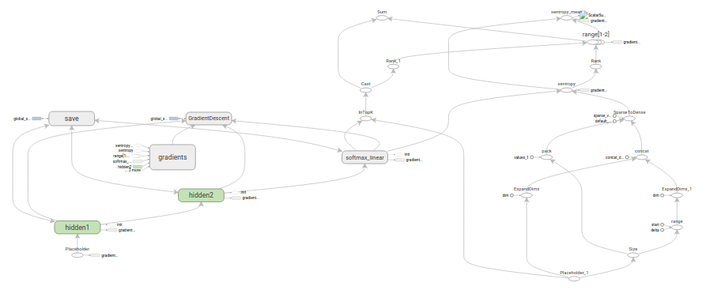
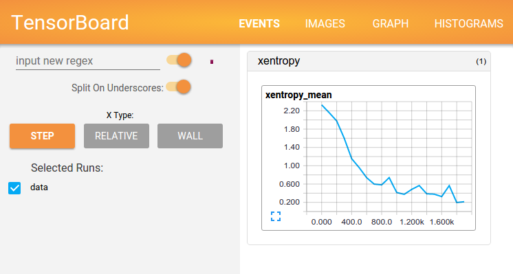

Tensorflow教程
TensorFlow运作方式入门
代码: tensorflow/examples/tutorials/mnist/
本篇教程的目的，是向大家展示如何利用TensorFlow使用（经典）MNIST数据集训练并评估一个用于识别手写数字的简易前馈神经网络（feed-forward neural network）。我们的目标读者，是有兴趣使用TensorFlow的资深机器学习人士。
因此，撰写该系列教程并不是为了教大家机器学习领域的基础知识。
在学习本教程之前，请确保您已按照安装TensorFlow教程中的要求，完成了安装。
教程使用的文件
本教程引用如下文件：
| 文件 | 目的 |
|---|---|
| mnist.py | 构建一个完全连接（fully connected）的MINST模型所需的代码。 |
| fully_connected_feed.py | 利用下载的数据集训练构建好的MNIST模型的主要代码，以数据反馈字典（feed dictionary）的形式作为输入模型。 |
只需要直接运行fully_connected_feed.py文件，就可以开始训练：
python fully_connected_feed.py |
准备数据
MNIST是机器学习领域的一个经典问题，指的是让机器查看一系列大小为28x28像素的手写数字灰度图像，并判断这些图像代表0-9中的哪一个数字。
下载
在run_training()方法的一开始，input_data.read_data_sets()函数会确保你的本地训练文件夹中，已经下载了正确的数据，然后将这些数据解压并返回一个含有DataSet实例的字典。
data_sets = input_data.read_data_sets(FLAGS.train_dir, FLAGS.fake_data) |
注意：fake_data标记是用于单元测试的，读者可以不必理会。
| 数据集 | 目的 |
|---|---|
data_sets.train |
55000个图像和标签（labels），作为主要训练集。 |
data_sets.validation |
5000个图像和标签，用于迭代验证训练准确度。 |
data_sets.test |
10000个图像和标签，用于最终测试训练准确度（trained accuracy）。 |
输入与占位符
placeholder_inputs()函数将生成两个tf.placeholder操作，定义传入图表中的shape参数，shape参数中包括batch_size值，后续还会将实际的训练用例传入图表。
images_placeholder = tf.placeholder(tf.float32, shape=(batch_size, mnist.IMAGE_PIXELS)) |
在训练循环（training loop）的后续步骤中，传入的整个图像和标签数据集会被切片，以符合每一个操作所设置的batch_size值，占位符操作将会填补以符合这个batch_size值。然后使用feed_dict参数，将数据传入sess.run()函数。
构建图表 （Build the Graph）
在为数据创建占位符之后，就可以运行mnist.py文件，经过三阶段的模式函数操作：inference()， loss()，和training()。图表就构建完成了。
- inference() —— 尽可能地构建好图表，满足促使神经网络向前反馈并做出预测的要求。
- loss() —— 往inference图表中添加生成损失（loss）所需要的操作（ops）。
- training() —— 往损失图表中添加计算并应用梯度（gradients）所需的操作。

推理（Inference）
inference()函数会尽可能地构建图表，做到返回包含了预测结果（output prediction）的Tensor。
它接受图像占位符为输入，在此基础上借助ReLu(Rectified Linear Units)激活函数，构建一对完全连接层（layers），以及一个有着十个节点（node）、指明了输出logits模型的线性层。
每一层都创建于一个唯一的tf.name_scope之下，创建于该作用域之下的所有元素都将带有其前缀。
with tf.name_scope('hidden1'): |
在定义的作用域中，每一层所使用的权重和偏差都在tf.Variable实例中生成，并且包含了各自期望的shape。
weights = tf.Variable( |
例如，当这些层是在hidden1作用域下生成时，赋予权重变量的独特名称将会是”hidden1/weights“。
每个变量在构建时，都会获得初始化操作（initializer ops）。
在这种最常见的情况下，通过tf.truncated_normal函数初始化权重变量，给赋予的shape则是一个二维tensor，其中第一个维度代表该层中权重变量所连接（connect from）的单元数量，第二个维度代表该层中权重变量所连接到的（connect to）单元数量。对于名叫hidden1的第一层，相应的维度则是[IMAGE_PIXELS, hidden1_units]，因为权重变量将图像输入连接到了hidden1层。tf.truncated_normal初始函数将根据所得到的均值和标准差，生成一个随机分布。
然后，通过tf.zeros函数初始化偏差变量（biases），确保所有偏差的起始值都是0，而它们的shape则是其在该层中所接到的（connect to）单元数量。
图表的三个主要操作，分别是两个tf.nn.relu操作，它们中嵌入了隐藏层所需的tf.matmul；以及logits模型所需的另外一个tf.matmul。三者依次生成，各自的tf.Variable实例则与输入占位符或下一层的输出tensor所连接。
hidden1 = tf.nn.relu(tf.matmul(images, weights) + biases) |
最后，程序会返回包含了输出结果的logitsTensor。
损失（Loss）
loss()函数通过添加所需的损失操作，进一步构建图表。
首先, labels_placeholder 的值被转换为64位整数。然后, 添加一个 tf.nn.sparse_softmax_cross_entropy_with_logits op 以自动从 labels_placeholder 生成 1-hot 标签, 并将输出数与推断 inference() 函数与那些1-hot 签进行比较。
labels = tf.to_int64(labels) |
然后，使用tf.reduce_mean函数，计算batch维度（第一维度）下交叉熵（cross entropy）的平均值，将将该值作为总损失。
loss = tf.reduce_mean(cross_entropy, name='xentropy_mean') |
最后，程序会返回包含了损失值的Tensor。
注意：交叉熵是信息理论中的概念，可以让我们描述如果基于已有事实，相信神经网络所做的推测最坏会导致什么结果。更多详情，请查阅博文《可视化信息理论》(http://colah.github.io/posts/2015-09-Visual-Information/)
训练
training()函数添加了通过梯度下降（gradient descent）将损失最小化所需的操作。
首先，该函数从loss()函数中获取损失Tensor，将其交给tf.scalar_summary，该 op 用于在与 tf.summary.FileWriter (见下文) 一起使用时将汇总值（summary values）生成到事件文件（events file）中。在本篇教程中，每次写入汇总值时，它都会释放损失Tensor的当前值（snapshot value）。
tf.scalar_summary(loss.op.name, loss) |
接下来，我们实例化一个tf.train.GradientDescentOptimizer，负责按照所要求的学习效率（learning rate）应用梯度下降法（gradients）。
optimizer = tf.train.GradientDescentOptimizer(learning_rate) |
之后，我们生成一个变量用于保存全局训练步骤（global training step）的数值，并使用tf.train.Optimizer.minimize函数更新系统中的三角权重（triangle weights）、增加全局步骤的操作。根据惯例，这个操作被称为 train_op，是TensorFlow会话（session）诱发一个完整训练步骤所必须运行的操作（见下文）。
global_step = tf.Variable(0, name='global_step', trainable=False) |
训练模型
一旦图表构建完毕，就通过fully_connected_feed.py文件中的用户代码进行循环地迭代式训练和评估。
图表
在run_training()这个函数的一开始，是一个Python语言中的with命令，这个命令表明所有已经构建的操作都要与默认的tf.Graph全局实例关联起来。
with tf.Graph().as_default(): |
tf.Graph实例是一系列可以作为整体执行的操作。TensorFlow的大部分场景只需要依赖默认图表一个实例即可。
利用多个图表的更加复杂的使用场景也是可能的，但是超出了本教程的范围。
会话
完成全部的构建准备、生成全部所需的操作之后，我们就可以创建一个tf.Session，用于运行图表。
sess = tf.Session() |
另外，也可以利用with代码块生成Session，限制作用域：
with tf.Session() as sess: |
Session函数中没有传入参数，表明该代码将会依附于（如果还没有创建会话，则会创建新的会话）默认的本地会话。
生成会话之后，所有tf.Variable实例都会立即通过调用各自初始化操作中的tf.Session.run函数进行初始化。
init = tf.global_variables_initializer() |
sess.run()方法将会运行图表中与作为参数传入的操作相对应的完整子集。在初次调用时，init操作只包含了变量初始化程序tf.group。图表的其他部分不会在这里，而是在下面的训练循环运行。
训练循环
完成会话中变量的初始化之后，就可以开始训练了。
训练的每一步都是通过用户代码控制，而能实现有效训练的最简单循环就是：
for step in xrange(FLAGS.max_steps): |
然而，本教程中的例子要更为复杂一点，原因是我们必须把输入的数据根据每一步的情况进行切分，以匹配之前生成的占位符。
向图表提供反馈
执行每一步时，我们的代码会生成一个反馈字典（feed dictionary），其中包含对应步骤中训练所要使用的例子，这些例子的哈希键就是其所代表的占位符操作。
fill_feed_dict函数会查询给定的DataSet，索要下一批次batch_size的图像和标签，与占位符相匹配的Tensor则会包含下一批次的图像和标签。
images_feed, labels_feed = data_set.next_batch(FLAGS.batch_size, |
然后，以占位符为哈希键，创建一个Python字典对象，键值则是其代表的反馈Tensor。
feed_dict = { |
这个字典随后作为feed_dict参数，传入sess.run()函数中，为这一步的训练提供输入样例。
检查状态
在运行sess.run函数时，要在代码中明确其需要获取的两个值：[train_op, loss]。
for step in xrange(FLAGS.max_steps): |
因为要获取这两个值，sess.run()会返回一个有两个元素的元组。其中每一个Tensor对象，对应了返回的元组中的numpy数组，而这些数组中包含了当前这步训练中对应Tensor的值。由于train_op并不会产生输出，其在返回的元祖中的对应元素就是None，所以会被抛弃。但是，如果模型在训练中出现偏差，lossTensor的值可能会变成NaN，所以我们要获取它的值，并记录下来。
假设训练一切正常，没有出现NaN，训练循环会每隔100个训练步骤，就打印一行简单的状态文本，告知用户当前的训练状态。
if step % 100 == 0: |
状态可视化
为了释放TensorBoard所使用的事件文件（events file），所有的即时数据（在这里只有一个）都要在图表构建阶段合并至一个操作（op）中。
summary = tf.summary.merge_all() |
在创建好会话（session）之后，可以实例化一个tf.train.SummaryWriter，用于写入包含了图表本身和即时数据具体值的事件文件。
summary_writer = tf.summary.FileWriter(FLAGS.train_dir, sess.graph) |
最后，每次运行summary时，都会往事件文件中写入最新的即时数据，函数的输出会传入事件文件读写器（writer）的add_summary()函数。。
summary_str = sess.run(summary, feed_dict=feed_dict) |
事件文件写入完毕之后，可以就训练文件夹打开一个TensorBoard，查看即时数据的情况。

注意：了解更多如何构建并运行TensorBoard的信息，请查看相关教程Tensorboard：训练过程可视化。
保存检查点（checkpoint）
为了得到可以用来后续恢复模型以进一步训练或评估的检查点文件（checkpoint file），我们实例化一个tf.train.Saver。
saver = tf.train.Saver() |
在训练循环中，将定期调用tf.train.Saver.save方法，向训练文件夹中写入包含了当前所有可训练变量值得检查点文件。
saver.save(sess, FLAGS.train_dir, global_step=step) |
这样，我们以后就可以使用saver.restore()方法，重载模型的参数，继续训练。
saver.restore(sess, FLAGS.train_dir) |
评估模型
每隔一千个训练步骤，我们的代码会尝试使用训练数据集与测试数据集，对模型进行评估。do_eval函数会被调用三次，分别使用训练数据集、验证数据集合测试数据集。
print('Training Data Eval:') |
注意，更复杂的使用场景通常是，先隔绝
data_sets.test测试数据集，只有在大量的超参数优化调整（hyperparameter tuning）之后才进行检查。但是，由于MNIST问题比较简单，我们在这里一次性评估所有的数据。
构建评估图表（Eval Graph）
在进入训练循环之前，我们应该先调用mnist.py文件中的evaluation函数，传入的logits和标签参数要与loss()的一致。这样做事为了先构建Eval操作。eval_correct = mnist.evaluation(logits, labels_placeholder)
evaluation函数会生成tf.nn.in_top_k 操作，如果在K个最有可能的预测中可以发现真的标签，那么这个操作就会将模型输出标记为正确。在本文中，我们把K的值设置为1，也就是只有在预测是真的标签时，才判定它是正确的
eval_correct = tf.nn.in_top_k(logits, labels, 1) |
评估图表的输出（Eval Output）
之后，我们可以创建一个循环，往其中添加feed_dict，并在调用sess.run()函数时传入eval_correct操作，目的就是用给定的数据集评估模型。
for step in xrange(steps_per_epoch): |
true_count变量会累加所有in_top_k操作判定为正确的预测之和。接下来，只需要将正确测试的总数，除以例子总数，就可以得出准确率了。
precision = true_count / num_examples |